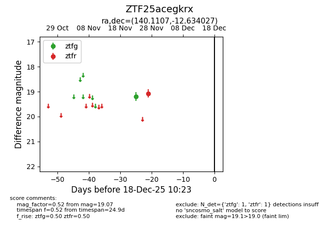
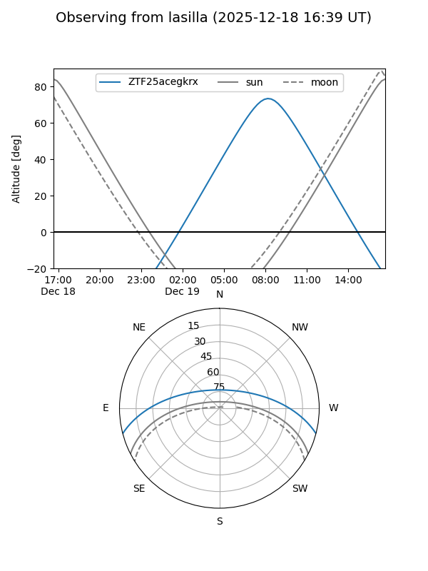
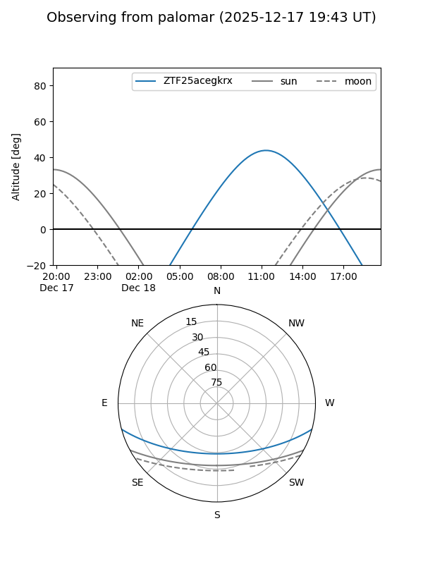

ZTF25acegkrx
Target ZTF25acegkrx at 2025-12-18 11:17
Aliases and brokers:
FINK: fink-portal.org/ZTF25acegkrx
Lasair: lasair-ztf.lsst.ac.uk/objects/ZTF25acegkrx
ALeRCE: alerce.online/object/ZTF25acegkrx
alt names
ZTF25acegkrx (ztf,fink_ztf)
Coordinates:
equatorial (ra, dec) = 140.1107,-12.63403
equatorial (HMS+DMS) = 09:20:26.56,-12:38:02.50
galactic (l, b) = (243.7849,+25.21026)
Photometry
last ztfg=19.20, ztfr=19.07
1 ztfg, 1 ztfr detections
Lightcurve

Visibility


Additional plots